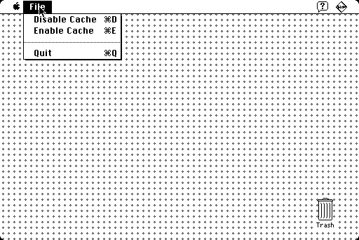

Are you sick of the cache included with your old Macintosh? Probably not, but if so, you can disable it with this nice utility.

There are a number of reasons you might want to disable the cache. One such use is to see how much slower a Dhrystone benchmark gets when run with the cache disabled. Caches add non-deterministic behavior to systems, too. If you are running some real-time control application, you may want to disable the cache in order to achieve better determinism (at the expense of average execution speed). Some software bugs only rear their ugly heads when a cache is present; there are probably some old Macintosh programs that don't work well with the caches present in newer systems. Another reason might be that you feel your Macintosh is has been running too quickly of late and you just want to slow things down and take it easy.
When the application starts, you'll notice a File menu (and not much else). You can enable and disable the cache from that menu. Keyboard shortcuts are provided, too.
Cache Control works by calling SwapInstructionCache and SwapDataCache, as documented in Apple Technical Note HW06 "Cache as Cache Can". It should work on any Macintosh where that technical note applies.
I hope you find this program to be fun, if not somewhat useful.
Cache Control is released under the MIT License. Source code is provided.